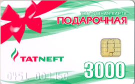

Топливная карта на бензин ЕДИНАЯ для юридических лиц, купить толивную карту МАСТЕРС
 Toggle navigation Бесплатная горячая линия 8-800-3333-619 Бесплатная
Toggle navigation Бесплатная горячая линия 8-800-3333-619 Бесплатная
горячая линия 8-800-3333-619 Топливная карта Преимущества наших карт Сервисы единой топливной карты Электронный документооборот (ЭДО) Вопрос-ответ Заказать карту Карта АЗС Список АЗС Регионы Бренды Для навигаторов Мобильное приложение Личный кабинет Компания Новости Партнеры Клиенты Статьи Контакты
Быстрый
старт
Мобильное
приложение
Бесплатная
консультация
Заполните поля формы:
Получить предложение Экономия до 30% Исключение хищений.Возмещение НДС 20%, контроль затрат Подробнее Самая большая сеть АЗС Более 13 000
Подробнее Надежное обслуживание Более 2500 компаний
сделали свой выбор в пользу «МАСТЕРС» Подробнее Гарантия качества топлива ВСЕ ЛУЧШИЕ СЕТИ АЗС - ЛУКОЙЛ, РОСНЕФТЬ, ТНК,
ГАЗПРОМНЕФТЬ, БАШНЕФТЬ, ТАТНЕФТЬ, СУРГУТНЕФТЕГАЗ, ШЕЛЛ Подробнее Мобильное приложение Мы специально разработали мобильное приложение,
чтобы Вам было еще проще найти нужную АЗС. Подробнее 0 0 0 0 0 0 Отправить запрос АЗС локатор Топливная карта Отправить запрос Список АЗС Скачать весь список
Топливная карта на бензин ЕДИНАЯ для юридических лиц, купить толивную карту МАСТЕРС
Топливная карта — друг бизнеса
В этой статье речь пойдёт об удобном способе безналичной оплаты и проверенном инструменте для контроля над расходами на ГСМ. Обязательно к прочтению для тех, у кого свой бизнес, связанный с перевозками (курьерские службы, грузоперевозки, такси и пр.).
Топливные карты появились в США в двадцатых годах прошлого века. Они давали возможность держателям заправлять автомобили в кредит. Их начали выпускать нефтяные компании, которые имели свои сети АЗС. В наши дни они либо принадлежат отдельным сетям АЗС, либо выпускаются сторонними сервисными компаниями.
Топливная карта "ЕДИНАЯ": как это работает
Итак, такие карты представляют собой пластиковый носитель с чипом, который содержит информацию о держателе (фамилия, имя), лимите топлива, который можно приобрести (в рублях или литрах), и типе доступного горюче-смазочного материала. Компания заказывает их выпуск для своих сотрудников (кстати, это бесплатно) и далее получает доступ ко всем транзакциям, связанным с АЗС: где, кто, когда и на какую сумму заправил транспортное средство.
Самой известной компанией, выпускающей топливные карты для юридических лиц в России и на территории СНГ, является "МАСТЕРС". Она была основана в 2005 году. Среди клиентов — крупные федеральные государственные предприятия: ФГУП «Почта России», ФСИН России. Сеть обслуживаемых АЗС включает более 13 000 станций проверенных брендов: «Лукойл», «Газпром», «Роснефть» и пр. Да-да, с единой топливной картой не грозит перепробег в поисках АЗС определённой компании — здесь десятки лучших сетей АЗС в одной карте. Ещё один плюс — серьёзная экономия места в холдере для карт. :)
Вот список остальных преимуществ:
Почему покупать бензин по топливным картам "ЕДИНАЯ" так выгодно?
Выгода складывается из двух пунктов. Во-первых, перечисленные преимущества (отсутствие перепробега, жёсткий контроль расходов), по оценкам специалистов, помогают экономить до 12% на стоимости топлива.
Во-вторых, "МАСТЕРС" ежемесячно предоставляет развёрнутые отчёты по топливным расходам вашей компании. Это здорово упрощает бухгалтерскую и налоговую отчётность. Дело в том, что в счёт-фактурах стоимость топлива указана с учётом НДС. Получается, что можно вычесть этот налог из финальной суммы с налогооблагаемой базы — 20%.
Таким образом, топливные карты АЗС помогают хорошо сэкономить и держать расходы под контролем.
Стоимость топлива
Средняя цена по России Адыгея республика Алтай республика Алтайский край Архангельская область Башкортостан республика Белгородская область Брянская область Бурятия республика Владимирская область Волгоградская область Вологодская область Воронежская область Дагестан республика Еврейская авт. область Забайкальский край Ивановская область Иркутская область Кабардино-Балкарская респ. Калининградская область Калмыкия республика Калужская область Карелия республика Кемеровская область Кировская область Коми республика Костромская область Краснодарский край Красноярский край Курганская область Курская область Ленинградская область Липецкая область Марий Эл республика Мордовия республика Москва Московская область Мурманская область Нижегородская область Новгородская область Новосибирская область Омская область Оренбургская область Орловская область Пензенская область Пермский край Приморский край Псковская область Ростовская область Рязанская область Самарская область Санкт-Петербург Саратовская область Свердловская область Северная Осетия-Алания Смоленская область Ставропольский край Тамбовская область Татарстан республика Тверская область Томская область Тульская область Тюменская область Удмуртская республика Ульяновская область Хабаровский край Хакасия республика Ханты-Мансийский авт. округ Челябинская область Чувашская республика Ярославская областьПреимущества "Единой" топливной карты от компании МАСТЕРС
Самая большая сеть АЗС Более 13 000 АЗС во всех регионахРоссии и странах СНГ.
Все лучшие сети АЗС - Роснефть, ТНК
Лукойл, Газпромнефть, Башнефть,
Татьнефть, Шелл. Экономия расходов до 30% За счет возмещения НДС - 20%
и контроля затрат - 10%
Прозрачные условия Исключены: наценки на топливо,
плата за транзакции,
штрафы и другие скрытые платежи. Отказ от НАЛИЧНЫХ - БЕЗОПАСНОСТЬ денег от кражи или утери
- исключено НЕЦЕЛЕВОЕ использование денег
- отсутствует ПЕРЕРАСХОД денег за счет
ЛИМИТОВ на каждую карту
Удобные сервисы - АЗС локатор
- Служба поддержки 24/7
- СМС уведомления
- Личный кабинет
- Мобильное приложение
Лучшее предложение от МАСТЕРС Получить коммерческое предложение
Сервисы "Единой" топливной карты
АЗС - локатор с маршрутами Удобен в действии, позволяет легко ибыстро построить маршрут до
любой АЗС. Служба поддержки 24/7 Бесплатная горячая линия технической
поддержки поможет Вам решить вопрос в
любое время. Аналитика и рекомендации Подробная аналитика расходов и
рекомендации по оптимизации затрат
по топливным картам. Персональное обслуживание Высокие стандарты сервиса и
индивидуальный подход к
каждому клиенту. SMS - уведомления Удобный сервис SMS-уведомлений
будет держать Вас в курсе о остатке счета и
необходимости его пополнения.
Личный кабинет Круглосуточный доступ к истории всех
операций по карте. Позволяет вести учет и
составлять отчеты.
Запрос на бесплатную консультацию Получить консультацию
Последние новости
Обновленный личный кабинет 21.08.2020 Уважаемые клиенты, для всех владельцев “Единой” топливной карты для юр... Подробнее Новое мобильное приложение 28.05.2020 Уважаемые клиенты и партнеры. Мы выпустили новую версию мобильног... Подробнее Мы работаем для вас 31.03.2020 Уважаемые клиенты! В это сложное для многих время мы хотим оказать вам... Подробнее Моментальное пополнение баланса 25.02.2020 Ваш бизнес страдает из-за простоев машин? Слишком долгое ожидание зачи... ПодробнееDevelopment&Tech support by InsightWhale ×
Получение коммерческого предложения
Скачайте ваше коммерческое предложение по ссылке ниже
Скачать коммерческое предложение
В ближайшее время сотрудники нашей компании свяжутся с Вами для
обсуждения деталей.
Если у вас возникли вопросы звоните по БЕСПЛАТНОМУ телефону
горячей линии 8-800-3333-619
Мобильное приложение
Мы специально разработали мобильное
приложение, чтобы Вам было еще проще
найти нужную АЗС.
Топливные карты и АЗС
Преимущества Сервисы единой топливной карты Вопрос-ответ Заказать карту Персональные данные Список АЗС Регионы Бренды Для навигаторов Мобильное приложение Политика конфиденциальности Отправить запросКонтакты
Москва,Центральный офис sales@masterscard.ru 127473, Россия, г. Москва, ул.
Краснопролетарская, д.16, стр.1 Бизнес-центр «Краснопролетарская, 16»,
1 подъезд, 3 этаж,
офис ООО «МАСТЕРС» Время работы:
Пн-Пт с 9:00 до 18:00 мск.
Контакты
Москва,Центральный офис sales@masterscard.ru 127473, Россия, г. Москва, ул.
Краснопролетарская, д.16, стр.1 Бизнес-центр «Краснопролетарская, 16»,
1 подъезд, 3 этаж,
офис ООО «МАСТЕРС» Время работы:
Пн-Пт с 9:00 до 18:00 мск.
Для получения предложения по картам
заполните форму заявки:
Вся представленная информация на данном сайте носит информационный характер, и ни при каких условиях не является публичной офертой, определяемой положениями Гражданского кодекса РФ. Разработка и продвижение сайта АИСТ Карта сайта Мобильное
приложение
Бесплатная
консультация
Выбираете топливные карты?
Наши эксперты с удовольствием Вам помогут!
Подберем карты специально для Вашего автопарка и ответим на все Ваши вопросы!
Позвоните нам на номер 8-800-3333-619 или оставьте
ваш E-MAIL и мы вышлем Предложение о сотрудничестве, договор и образцы бухгалтерских документов
Сообщение отправлено
В ближайшее время сотрудники нашей компании свяжутся с Вами для
обсуждения деталей
Если у вас возникли вопросы звоните по БЕСПЛАТНОМУ телефону
горячей линии 8-800-3333-619
Получение коммерческого предложения
Для получения коммерческого предложения заполните
пожалуйста поля ниже:
Скачайте ваше коммерческое предложение по ссылке ниже
Скачать коммерческое предложение
В ближайшее время сотрудники нашей компании свяжутся с Вами для
обсуждения деталей.
Если у вас возникли вопросы звоните по БЕСПЛАТНОМУ телефону
горячей линии 8-800-3333-619
Сообщение отправлено!
Благодарим Вас за заявку на топливные карты "Единая".
В течении 15 минут, на указанный Вами адрес почты, придет наше предложение.
Или оформите карты на сайте "онлайн".
